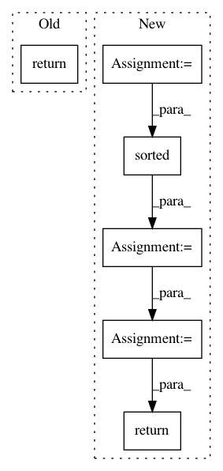

55b557f17385ca10b8a3e8fb8bbb0d3799906db5,src/sdk/pynni/nni/compression/tensorflow/builtin_pruners.py,FPGMPruner,_get_min_gm_kernel_idx,#FPGMPruner#Any#Any#,177
Before Change
idx_tensor = tf.constant(idx_list)
_, idx = tf.math.top_k(dist_tensor, k=n)
return tf.gather(idx_tensor, idx)
def _get_distance_sum(self, weight, in_idx, out_idx):
w = tf.reshape(weight, (-1, weight.shape[-2], weight.shape[-1]))
anchor_w = tf.tile(tf.expand_dims(weight[in_idx, out_idx], 0), [w.shape[0], 1, 1])
After Change
assert len(weight.shape) >= 3
assert weight.shape[0] * weight.shape[1] > 2
dist_list = []
for in_i in range(weight.shape[0]):
for out_i in range(weight.shape[1]):
dist_sum = self._get_distance_sum(weight, in_i, out_i)
dist_list.append((dist_sum, (in_i, out_i)))
min_gm_kernels = sorted(dist_list, key=lambda x: x[0])[:n]
return [x[1] for x in min_gm_kernels]
def _get_distance_sum(self, weight, in_idx, out_idx):
w = tf.reshape(weight, (-1, weight.shape[-2], weight.shape[-1]))
anchor_w = tf.tile(tf.expand_dims(weight[in_idx, out_idx], 0), [w.shape[0], 1, 1])
In pattern: SUPERPATTERN
Frequency: 3
Non-data size: 6
Instances
Project Name: microsoft/nni
Commit Name: 55b557f17385ca10b8a3e8fb8bbb0d3799906db5
Time: 2019-11-20
Author: 38930155+chicm-ms@users.noreply.github.com
File Name: src/sdk/pynni/nni/compression/tensorflow/builtin_pruners.py
Class Name: FPGMPruner
Method Name: _get_min_gm_kernel_idx
Project Name: PetrochukM/PyTorch-NLP
Commit Name: dd2eaf6c174fdd757514bc06d1063e5f9c6bb4a0
Time: 2019-10-20
Author: petrochukm@gmail.com
File Name: torchnlp/samplers/noisy_sorted_sampler.py
Class Name: NoisySortedSampler
Method Name: __iter__
Project Name: OpenNMT/OpenNMT-py
Commit Name: 685126644ae540be72eb662527269a0395e2c9eb
Time: 2017-09-05
Author: bpeters@coli.uni-saarland.de
File Name: onmt/IO.py
Class Name:
Method Name: make_features